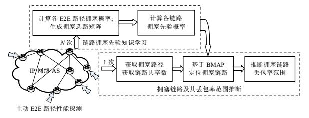
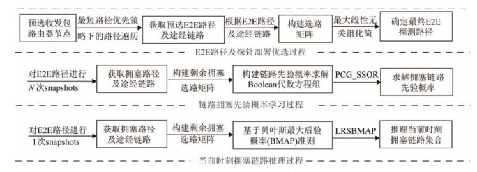
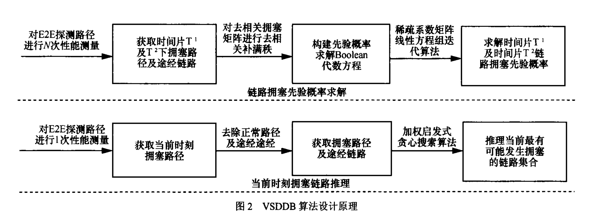
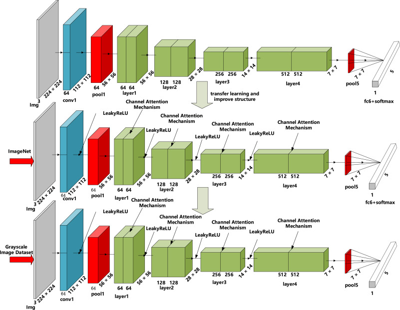

个人介绍
陈宇，郑州航空工业管理学院三级教授，工学博士，电子信息学院院长，西安理工大学博士生导师，郑州航空工业管理学院硕士生导师，河南省高层次人才、河南省教育厅学术技术带头人。
学术任职
- 国家科技部重点研发计划项目评审专家
- 河南省通用航空技术重点实验室副主任
- 河南省无人机自主飞行控制工程研究中心主任
- 河南省人工智能学会常务理事
- 河南省航空航天学会空天大数据专业委员会副主任
学术会议
研究方向
- 人工智能
- 网络信息安全
- 空天地无人系统协同控制
科研工作与成果
主持完成国家重点研发计划课题、河南省重点研发计划专项、航空科学基金重点实验室项目等国家级、省部级科研项目20余项。主持完成的国家重点研发计划课题包括“基于个性化需求的全产业链智能化数据空间技术研发”。
获河南省科技进步二等奖2项（排名第一、第二各1项）、中国商业联合会科技进步一等奖（排名第二）、中国指挥与控制学会科技进步奖（排名第四）；主持项目获河南省教育厅教科研成果一等奖5项。
在《软件学报》《通信学报》《Engineering Applications of Artificial Intelligence》等国内外学术期刊发表论文80余篇；以第一发明人获授权发明专利6项，出版学术专著4部，主编省级规划教材2部。
代表性论文
以下列出部分代表性论文，点击题目可访问原文。部分论文附原文研究图示。

图源：陈宇等，2017，图 2 一种 IP 网络拥塞链路丢包率范围推断算法软件学报，2017，28(5)：1296–1314。论文 ↗
图源：陈宇等，2017，图 1 一种大规模 IP 网络多链路拥塞推理算法软件学报，2017，28(7)：1815–1834。论文 ↗
VSDDB 算法设计原理 · 图 2 基于变结构离散动态贝叶斯 IP 网络拥塞链路推理通信学报，2016，37(8)：13–23。论文信息（参考文献 18）↗
图源：团队论文稿，图 1 EMSF-Net: An Efficient Multiscale Fusion Network With Lightweight Attention for Object Detection in Remote Sensing ImagesIEEE Journal of Selected Topics in Applied Earth Observations and Remote Sensing, 19: 15158–15184, 2026. 论文 ↗ · 代码 ↗
图源：Li 等，2023，图 6 · CC BY 4.0 
图源：Chen 等，2018，图 1 · CC BY 4.0 Classification methods of a small sample target object in the sky based on the higher layer visualizing feature and transfer learning deep networksEURASIP Journal on Wireless Communications and Networking, 2018. 论文 ↗
图源：Chen 等，2025，图 2 · CC BY 4.0 Improving weak magnetic detection of ferromagnetic material defects diagnostics via transfer learning-enhanced residual networksEngineering Applications of Artificial Intelligence, 2025. 论文 ↗- Efficient Influential Nodes Tracking via Link Prediction in Evolving NetworksIEEE Internet of Things Journal, 2025. 论文 ↗
- Optimization Research on Defect Localization in Ultrasonic Images of Anisotropic and Multilayer CFRP StructuresIEEE Transactions on Instrumentation and Measurement, 2024. 论文 ↗
- An improved event-triggered predictive control for capacity adjustment in reconfigurable job-shopsInternational Journal of Production Research, 2023. 论文 ↗
- Research status of spatial Heterodyne spectroscopy – A reviewMicrochemical Journal, 2021. 论文 ↗
- Robust adaptive multistage anti-windup dynamic surface control for dynamic positioning ships with mismatched disturbanceJournal of the Franklin Institute, 2021. 论文 ↗